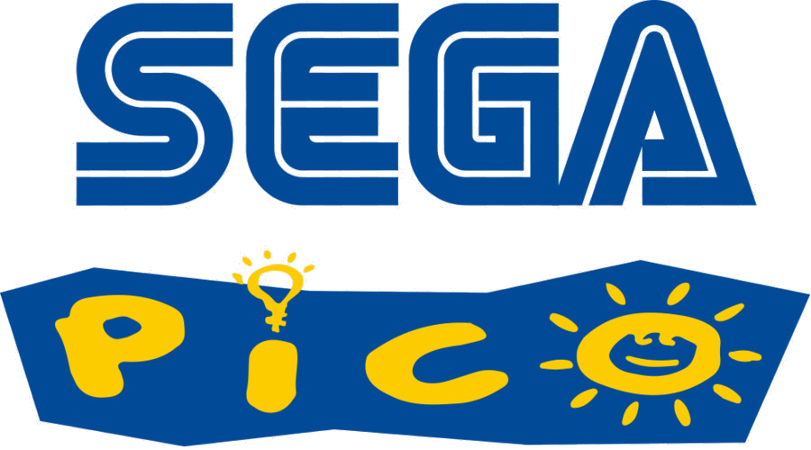

Sega Pico
Released: 1993
24 games
The Sega Pico, also known as Kids Computer Pico, is an educational video game console by Sega. Marketed as "edutainment", the main focus of the Pico was educational video games for children between 3 and 7 years old. The Pico was released in 1993 in Japan and 1994 in North America and Europe, and later reached China. It was later succeeded by the Advanced Pico Beena, which was released in Japan in 2005. Though the Pico was sold continuously in Japan through the release of the Beena, in North America and Europe the Pico was less successful and was discontinued in early 1998, later being re-released by Majesco. Releases for the Pico were focused on education for children and included titles supported by licensed franchised animated characters, including Disney and Sega's own Sonic the Hedgehog series. Overall, Sega claims sales of 3.4 million Pico consoles and 11.2 million game cartridges, and over 350,000 Beena consoles and 800,000 cartridges.
| Cover | Title | Year | Genre | Publisher | Developer |
|---|---|---|---|---|---|

|
A Year at Pooh Corner | 1994 | Education | Sega | Novotrade International |

|
Adventures in Letterland with Jack & Jill | 1995 | Education | Thinking Cap | Realtime Associates |

|
Crayola Crayons: Create a World | 1995 | Education | Sega | Novotrade International |

|
Disney's Pocahontas: Riverbend Adventures | 1995 | Action • Education | Sega | Realtime Associates |

|
Ecco Jr. and the Great Ocean Treasure Hunt! | 1994 | Education | Sega | Novotrade International |

|
Magic Crayons | 1994 | Education • Puzzle | Sega | Realtime Associates |

|
Math Antics with Disney's 101 Dalmatians | 1996 | Education | Sega | Appaloosa Interactive |

|
Mickey's Blast Into the Past | 1994 | Education | Sega | Walt Disney Computer Software |

|
Musical Zoo | 1995 | Education | Sega | Sega |

|
Pepe's Puzzles | 1995 | Education | Sega | Sega |

|
Pocket Monsters Advance Generation: Minna de Pico: Pokemon Waiwai Battle! | Unknown | - | - | |

|
Pokémon: Advanced Generation: I've Begun Hiragana and Katakana! | 2003 | Education | Nintendo | Sega Toys |

|
Pokémon: Catch the Numbers! | 2002 | Puzzle | Sega | Sega |

|
Professor Pico and the Paintbox Puzzle | 1995 | Education | Sega | Sega |

|
Richard Scarry's Huckle and Lowly's Busiest Day Ever | 1994 | Puzzle | Sega | Realtime Associates |

|
Sesame Street: Alphabet Avenue | 1997 | Education | Sega | Appaloosa Interactive |

|
Smart Alex and Smart Alice: Curious Kids | 1996 | Education | Sega | Novotrade International |

|
Sonic the Hedgehog's Gameworld | 1994 | Education | Sega | Aspect |

|
Tails and the Music Maker | 1994 | Education | Sega | Realtime Associates |

|
The Berenstain Bears' A School Day | 1995 | Education | Sega | Realtime Associates |

|
The Great Counting Caper With the 3 Blind Mice | 1995 | Education | Thinking Cap | Realtime Associates |

|
The Lion King: Adventures at Pride Rock | 1995 | Education | Sega | Realtime Associates |

|
The Magic School Bus | 1995 | Education • Puzzle | Sega | Novotrade International |

|
The Muppets on the Go | 1996 | Action • Sports | Sega | The Climax Group |